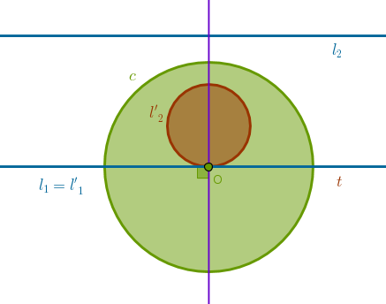
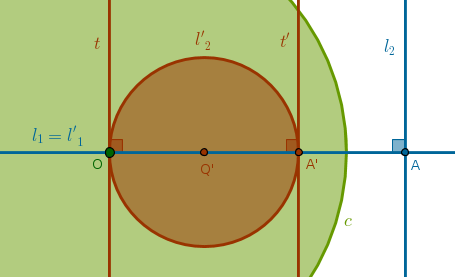
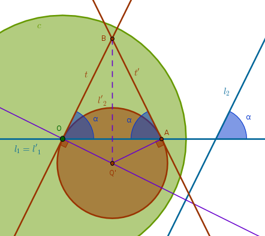
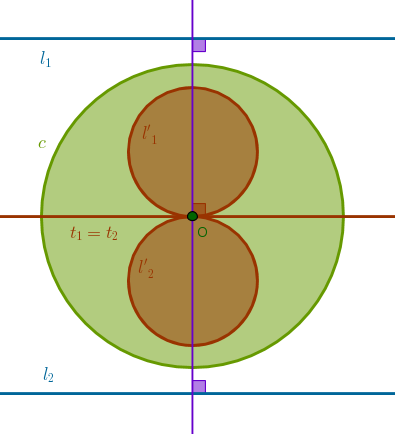
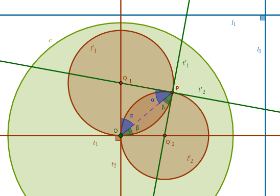
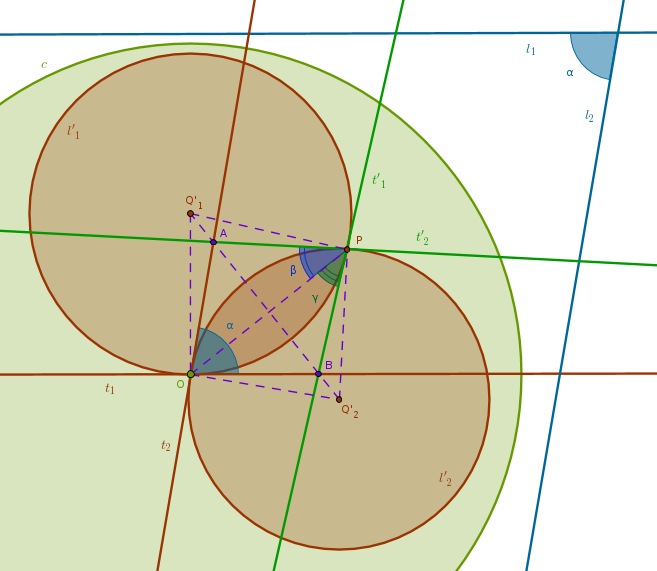

Definition ICD2
An angle between two curves at a point \(T\) is an angle between the tangents to both curves at a point \(T\)
Property ICP31
Under the inversion with respect to a circle \(c(O, r)\) the angle between two straight lines \(l_1\) and \(l_2\), both of which pass through \(O\), is equal to the angle between their images \(l'_1\) and \(l'_2\)
According to ICP9 both straight lines \(l_1\) and \(l_2\) are transformed into themselves and, hence, the angle between them is equal to the angle between their images \(l'_1\) and \(l'_2\).
Property ICP32
Under the inversion with respect to a circle \(c(O, r)\) the angle between two straight lines \(l_1\) and \(l_2\), of which exactly one passes through \(O\), is equal to the angle between their images \(l'_1\) and \(l'_2\)
Without the loss of generality let us assume that \(l_1\) passes through \(O\) and from ICP9 it follows then that its image with respect to \(c\) also passes through \(O\) and coincides with \(l_1\). From the properties ICP10-14 it follows then that \(l_2\) is transformed into a circle \(l'_2\) that passes through \(O\). From ICD2 it follows that the angle between \(l'_1\) and \(l'_2\) is the angle between the straight line \(l'_1\) and the tangent \(t\) to \(l'_2\) at \(O\).
Let us look at an inversion with positive power and consider three cases: \(l_1\) and \(l_2\) are parallel, perpendicular, neither.
Case 1
When \(l_1\) and \(l_2\) are parallel then the angle between them is zero degrees and the tangent \(t\) to \(l'_2\) at \(O\) is parallel to \(l_2\) (B1P27). We then have two parallel straight lines, \(l'_1\) and \(t\), passing through one point \(O\) which means that they must coincide which makes the angle between them also zero degrees, thus preserving it:
Case 2
When \(l_1\) and \(l_2\) are perpendicular then \(O\), \(A\), \(A'\) and \(Q'\), by the properties ICP10-14, are all located on \(l'_1\). Hence, the diameter \(OQ'A'\) of \(l'_2\) is also located on \(l'_1\).
By B1P27, if a straight line falling on two straight lines makes the alternate angles equal then the two straigt lines are parallel, both tangents to \(l'_2\), \(t\) at \(O\) and \(t'\) at \(A'\), are parallel since the corresponding angles between the diameter \(OQ'A'\) and \(t\) and \(t'\) are right by definition of a tangent.
By the same B1P27 we prove that \(t\) is prallel to \(l_2\) and \(t'\) is parallel to \(l_2\) making all three straight lines \(t, t', l_2\) parallel.
Lastly, because the above straight lines are parallel, by B1P29, a straight line (\(l_1 = l'_1\)) falling on two parallel straight lines (\(t\) and \(t'\)) makes the alternate angles equal to one another, it follows that \(t\) and \(t'\) are perpendicular to \(l'_1\) which preserves the angle between \(l_1\) and \(l_2\):
Case 3
When \(l_1\) and \(l_2\) are neither parallel nor perpendicular then we consider the smaller angle between them as \(\alpha\). The tangent \(t\) to \(l'_2\) at \(O\) is parallel to \(l_2\) (B1P27). It follows then that a straight line \(l'_1\) is falling on two parallel straight lines \(t\) and \(l_2\). From B1P29 it follows that:
$$\angle BOA = \alpha$$thus preserving the angle between \(l'_1\) and \(l'_2\) at \(O\):
Consider the angle between the second tangent, \(t'\), and \(l'_1\) at \(A\). By construction (and the definition of a tangent) \(\angle Q'AB\) and \(\angle Q'OB\) are right and:
$$Q'A = Q'O$$(being the radii of \(l'_2\)). Hence, the right triangles \(Q'AB\) and \(Q'OB\), by Pythagoras, have:
$$BA = BO$$(\(BQ'\) being a common hypotenuse). Hence, \(\triangle OBA\) is isosceles having its interior angles at the base \(OA\) equal (B1P5). Hence:
$$\angle BAO = \angle BOA = \alpha$$and the angle between \(l_1\) and \(l_2\) is also preserved.
Property ICP33
Under the inversion with respect to a circle \(c(O, r)\) the angle between two straight lines \(l_1\) and \(l_2\), none of which pass through \(O\), is equal to the angle between their images \(l'_1\) and \(l'_2\)
Again, let us look at an inversion with positive power and consider three cases: \(l_1\) and \(l_2\) are parallel, perpendicular, neither. Let \(P\) be the second point of intersection of \(l'_1\) and \(l'_2\). Let \(t_1\) and \(t'_1\) be tangents to \(l'_1\) at \(O\) and \(P\). Let \(t_2\) and \(t'_2\) be tangents to \(l'_2\) at \(O\) and \(P\).
Case 1
When \(l_1\) and \(l_2\) are parallel then the angle between them is zero degrees. By B1P27 the tangent \(t_1\) to \(l'_1\) at \(O\) is parallel to \(l_1\) and the tangent \(t_2\) to \(l'_2\) at \(O\) is parallel to \(l_2\).
But it is given that \(l_1\) is parallel to \(l_2\) and hence \(t_2\), for example, is parallel to \(l_1\). From B1P30, straight lines (\(t_1, t_2\)) parallel to the same straight line (\(l_1\)) are parallel to one another, it follows that \(t_1\) and \(t_2\) are parallel.
But since \(t_1\) and \(t_2\) both pass through \(O\), it follows that they coincide making the angle between them also zero degrees, thus preserving it:
Case 2
When \(l_1\) and \(l_2\) are perpendicular then together with \(t_1\), which is parallel to \(l_1\) (B1P27) and \(t_2\), which is parallel to \(l_2\) (B1P27), they form a parallelogram. Hence, from B1P34 (in parallelogrammic areas the opposite sides and angles equal one another), it follows that \(t_1\) and \(t_2\) are also perpendicular. In the previous property, ICP32, we've proved that \(\triangle OQ'_1P\) and \(\triangle OQ'_2P\) are isosceles. Hence:
$$90^{\circ} = \alpha + \beta$$must be true at both vertexes, \(O\) and \(P\), thus proving that the angle between \(t'_1\) and \(t'_2\) is preserved:
Case 3
When \(l_1\) and \(l_2\) are neither parallel nor perpendicular then we consider the smaller angle between them as \(\alpha\). As in the previous (perpendicular) case we prove that the angle between \(t_1\) and \(t_2\) is \(\alpha\) (the opposite angles in the parallelogrammic areas argument). However, this time the tangents to circles intersect not at their centers but elsewhere - at the points \(A\) and \(B\):
Still, by construction \(\triangle Q'_1OB\) and \(\triangle Q'_1PB\) are right. They have a common hypotenuse \(Q'_1B\) and two equal sides, \(Q'_1O = Q'_1P\), since these are the radii of \(l'_1\). By Pythagoras \(BP = BO\). Hence, \(\triangle OBP\) is isosceles having its interior angles at the base \(OP\) equal, \(\gamma\). In a similar way we can prove that \(AP = AO\), \(\triangle OAP\) is isosceles having its interior angles at the base \(OP\) equal, \(\beta\). Hence:
$$\alpha = \beta + \gamma$$proving that the angle between \(t'_1\) and \(t'_2\) is also preserved.
From ICD2 and the above angle preservation properties for straight lines two more properties follow:
Property ICP34
Under the inversion with respect to a circle \(c(O, r)\) the angle between a straight line \(l\) and a circle \(q\) is equal to the angle between their images \(l'\) and \(q'\)
Property ICP35
Under the inversion with respect to a circle \(c(O, r)\) the angle between two circles \(q_1\) and \(q_2\) is equal to the angle between their images \(q'_1\) and \(q'_2\)
We will omit the proofs of these properties but your are encouraged to construct them yourself nonetheless.
\(\blacksquare\)